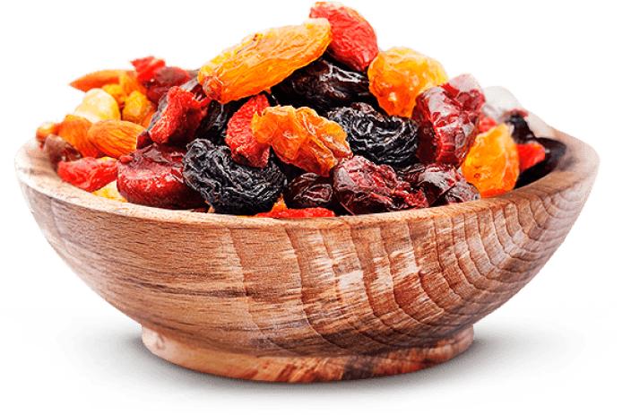

#1 Сухофрукты в Кыргызстане
Экспорт сухофруктов, грецких орехов, фасоли и меда в Европейский Союз
- 5.000+
- 8.000+
- 1.000+
- Клиент
- Доставка
- Рейтинги

Изюм - голден (жомбо-крупный)
learn moreАбрикос
learn moreИзюм черный Жомбо
learn moreСухофрукты — высушенные фрукты или ягоды, из которых путем высушивания была удалена большинство влаги, которая находилась в свежих фруктах или ягодах. Сушатся сухофрукты естественным путём (например, на солнце), или с применением промышленных методов (например, с помощью дегидратора или сушилки для овощей).Сушатся сухофрукты естественным путём (например, на солнце), или с применением промышленных методов (например, с помощью дегидратора или сушилки для овощей)
Миндаль в скорлупе
learn moreМиндаль в скорлупе
learn moreМиндаль в скорлупе
learn moreНесколько раз в месяц, но не более раза в неделю, мы высылаем информацию об актуальных акциях, о лучших предложениях, о распродажах и ценных конкурсах.
Наша компания основана в 2009 году. Мы являемся крупным производителем и экспортером сухофруктов в Кыргызстане. На сегодняшний день KYRGYZ FRUIT — один из лидеров на Кыргызском рынке по производству и продаже биологически чистых, а значит произведённых из натурально выращенного сырья, сухофруктов. Мы экспортируем нашу продукцию во все страны Западной Европы. Самые большие объёмы поставок осуществляются в такие страны как Великобритания, Германия, Израиль.
Вся продукция производится на высококачественном оборудовании. Изюм проходит лазерную обработку на оборудовании VISYS, а также сортируется по цвету и размеру. Качество нашей продукции отвечает всем международным стандартам, так как она производится в стерильных условиях из экологически чистого сырья. Грамотная работа квалифицированного персонала, отличное знание аграрного дел желаний потребителей позволяет нашей компании стремительно и динамично развиваться на мировом рынке.